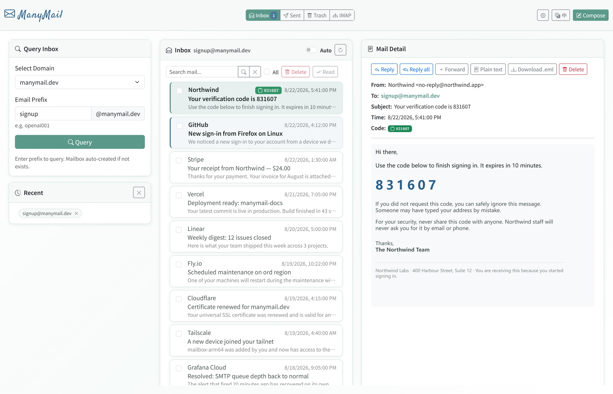

A small Docker stack for inboxes you host yourself: SMTP receiver, webmail, IMAP, and a REST API — without Postfix, Dovecot, or a full mail platform.
What it is
ManyMail receives mail for your own domains and gives you three ways to read it: a browser UI,
an IMAP endpoint for Thunderbird or a phone, and a REST API for scripts. Everything runs from
one docker compose up on a small VPS or an ARM box.
It suits verification-code mail, disposable and catch-all addresses, and running a handful of domains off one host. It is not a corporate mail platform — see the comparison below.

Features
Self-hosted SMTP
Receives mail on port 25 for any domain you point at it. MX, SPF, DKIM and DMARC setup is documented.
Webmail
Search, read, reply, compose, attachments. Mail HTML and CSS are sanitized before they render.
IMAP
Point Thunderbird or a phone client at it. An optional bridge pulls in Gmail, Outlook, QQ and 163 accounts.
REST API
DuckMail-compatible endpoints, so existing disposable-mail scripts and tools work against it.
Multi-domain and catch-all
Serve several domains from one instance. Prefixes get created on demand when you need a fresh address.
One compose file
FastAPI, Flask, Node.js and MongoDB. MIT licensed, and the data stays on your server.
How it compares
| What you want | Use |
|---|---|
| Catch-all and disposable addresses on your own domain | ManyMail |
| Webmail, REST API and IMAP from one compose file | ManyMail |
| A small VPS or ARM box, no Postfix or Dovecot to tune | ManyMail |
| Company mailboxes, CalDAV, ActiveSync, Rspamd, quotas | Mailcow, docker-mailserver, Mail-in-a-Box |
Quick start
git clone https://github.com/margbug01/ManyMail.git
cd ManyMail
cp .env.example .env
# set SECRET_KEY, ACCESS_PASSWORD, API_KEY, UNIFIED_PASSWORD, DOMAINS
docker compose up -d --build
curl http://localhost:8080/healthThen point an MX record at the host and open the viewer on port 5000. Full DNS setup, the API reference and the architecture diagram are in the README.
Before you put it on the internet
Port 25 is a public listener. Read the
production hardening guide,
replace every placeholder secret in .env, keep AUTO_CREATE_ACCOUNTS=0,
and put the viewer behind TLS. Vulnerability reports go through
the security policy.